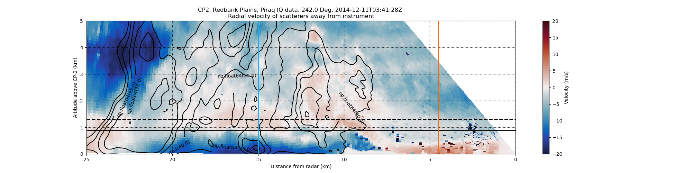

Note
Go to the end to download the full example code
Create an RHI plot with reflectivity contour lines from an MDV file#
An example which creates an RHI plot of velocity using a RadarDisplay object and adding Reflectivity contours from the same MDV file.
print(__doc__)
# Author: Cory Weber (cweber@anl.gov)
# License: BSD 3 clause
import matplotlib.pyplot as plt
import numpy as np
import scipy.ndimage as spyi
import pyart
from pyart.testing import get_test_data
filename = get_test_data("034142.mdv")
# create the plot using RadarDisplay
sweep = 2
# read file
radar = pyart.io.read_mdv(filename)
display = pyart.graph.RadarDisplay(radar)
fig = plt.figure(figsize=[20, 5])
ax = fig.add_subplot(111)
# plot velocity
# cmap is the color ramp being used in this case blue to red no 18
# https://github.com/ARM-DOE/pyart/blob/master/pyart/graph/cm.py
# for more information
display.plot(
"velocity",
sweep=sweep,
vmin=-20,
vmax=20.0,
fig=fig,
ax=ax,
cmap="pyart_BuDRd18",
colorbar_label="Velocity (m/s)",
)
# line commented out to show reflectivity
# display.plot('reflectivity', sweep=sweep, vmin=-0, vmax=45.0, fig=fig,ax=ax)
# get data
start = radar.get_start(sweep)
end = radar.get_end(sweep) + 1
data = radar.get_field(sweep, "reflectivity")
x, y, z = radar.get_gate_x_y_z(sweep, edges=False)
x /= 1000.0
y /= 1000.0
z /= 1000.0
# smooth out the lines
data = spyi.gaussian_filter(data, sigma=1.2)
# calculate (R)ange
R = np.sqrt(x**2 + y**2) * np.sign(y)
R = -R
display.set_limits(xlim=[25, 0], ylim=[0, 5])
# add contours
# creates steps 35 to 100 by 5
levels = np.arange(35, 100, 5)
# adds coutours to plot
contours = ax.contour(
R, z, data, levels, linewidths=1.5, colors="k", linestyles="solid", antialiased=True
)
# adds contour labels (fmt= '%r' displays 10.0 vs 10.0000)
plt.clabel(contours, levels, fmt="%r", inline=True, fontsize=10)
# format plot
# add grid (dotted lines, major axis only)
ax.grid(color="k", linestyle=":", linewidth=1, which="major")
# horizontal
ax.axhline(0.9, 0, 1, linestyle="solid", color="k", linewidth=2)
ax.axhline(1.3, 0, 1, linestyle="dashed", color="k", linewidth=2)
# vertical
ax.axvline(15, 0, 1, linestyle="solid", color="#00b4ff", linewidth=2)
ax.axvline(4.5, 0, 1, linestyle="solid", color="#ff6800", linewidth=2)
# setting matplotlib overrides display.plot defaults
ax.set_ylabel("Altitude above CP-2 (km)")
plt.show()
Total running time of the script: ( 0 minutes 1.555 seconds)